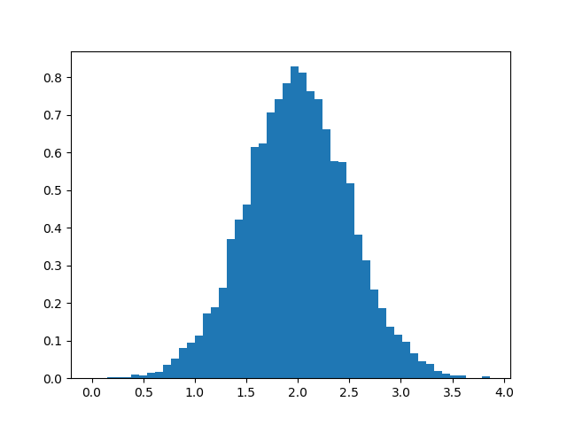
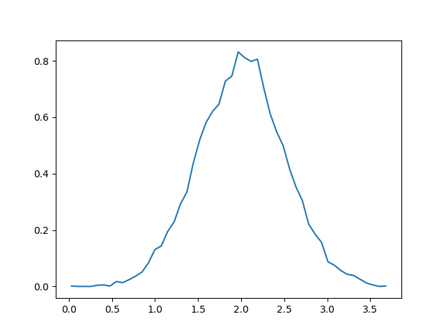

numpy 科学计算数组工具集
Table of Contents
1 numpy
numpy 是 Python 科学计算的基础包，主要有以下一些功能：
- N 维数组
- 线性代数，傅里叶变换等
1.1 安装测试
pip install numpy
python -c 'import numpy; numpy.test()'
1.2 基本用法
numpy 的数组类是 ndarray ，它的别名是 array 。主要 numpy.array 和
Python 自带的 array.array 是不同的。
>>> import numpy as np a = np.arange(15).reshape(3, 5) >>> a = np.arange(15).reshape(3, 5) >>> a array([[ 0, 1, 2, 3, 4], [ 5, 6, 7, 8, 9], [10, 11, 12, 13, 14]]) >>> a.shape (3, 5) >>> a.ndim 2 >>> a.size 15 >>> a.dtype dtype('int64') >>> a.itemsize 8 >>> >>> b = np.array([6, 7, 8]) >>> type(a) <class 'numpy.ndarray'> >>> type(b) <class 'numpy.ndarray'> >>>
1.3 创建数组
>>> # a = np.array(1, 2, 3, 4) # WRONG ... np.array([1, 2, 3, 4]) # RIGHT array([1, 2, 3, 4]) >>> np.array([(1.5,2,3), (4,5,6)]) array([[1.5, 2. , 3. ], [4. , 5. , 6. ]]) >>> np.array([ [1,2], [3,4] ], dtype=complex) array([[1.+0.j, 2.+0.j], [3.+0.j, 4.+0.j]])
1.4 初始化数组
>>> np.zeros((3,4)) array([[0., 0., 0., 0.], [0., 0., 0., 0.], [0., 0., 0., 0.]]) >>> np.ones((2,3,4), dtype=np.int16) array([[[1, 1, 1, 1], [1, 1, 1, 1], [1, 1, 1, 1]], [[1, 1, 1, 1], [1, 1, 1, 1], [1, 1, 1, 1]]], dtype=int16) >>> np.empty((2,3)) array([[1.5, 2. , 3. ], [4. , 5. , 6. ]]) >>> np.arange(10, 30, 5) # samillar to range() array([10, 15, 20, 25]) >>> np.arange(1, 2, 0.3) # but accept float array([1. , 1.3, 1.6, 1.9]) >>> >>> from numpy import pi >>> np.linspace(0, 2, 9) array([0. , 0.25, 0.5 , 0.75, 1. , 1.25, 1.5 , 1.75, 2. ]) >>> x = np.linspace(0, 2*pi, 10) >>> y = np.sin(x) >>> x array([0. , 0.6981317 , 1.3962634 , 2.0943951 , 2.7925268 , 3.4906585 , 4.1887902 , 4.88692191, 5.58505361, 6.28318531]) >>> y array([ 0.00000000e+00, 6.42787610e-01, 9.84807753e-01, 8.66025404e-01, 3.42020143e-01, -3.42020143e-01, -8.66025404e-01, -9.84807753e-01, -6.42787610e-01, -2.44929360e-16])
1.5 修改数组维度 reshape
>>> np.arange(6) array([0, 1, 2, 3, 4, 5]) >>> np.arange(12).reshape(4,3) array([[ 0, 1, 2], [ 3, 4, 5], [ 6, 7, 8], [ 9, 10, 11]]) >>> np.arange(24).reshape(2,3,4) array([[[ 0, 1, 2, 3], [ 4, 5, 6, 7], [ 8, 9, 10, 11]], [[12, 13, 14, 15], [16, 17, 18, 19], [20, 21, 22, 23]]]) >>>
1.6 数学操作
numpy 重载了 Python 的数学操作符，基本操作如下
>>> a = np.array( [20,30,40,50] ) >>> b = np.arange(4) >>> c = a-b >>> b**2 array([0, 1, 4, 9]) >>> 10*np.sin(a) array([ 9.12945251, -9.88031624, 7.4511316 , -2.62374854]) >>> a<35 array([ True, True, False, False])
矩阵的乘法和矩阵里面每个元素相乘
>>> A = np.array([[1,1], ... [0,1]] ) >>> B = np.array([[2,0], ... [3,4]] ) >>> A * B # elementwise product array([[2, 0], [0, 4]]) >>> A @ B # matrix product array([[5, 4], [3, 4]]) >>> A.dot(B) # another matrix product array([[5, 4], [3, 4]]) >>>
>>> a = np.random.random((2,3)) >>> a array([[0.54468729, 0.03709586, 0.65467565], [0.56025666, 0.39270547, 0.51565504]]) >>> a.sum() 2.705075965630731 >>> a.min() 0.037095859583547 >>> a.max() 0.6546756487343482 >>>
1.7 深度复制
>>> a array([[0.54468729, 0.03709586, 0.65467565], [0.56025666, 0.39270547, 0.51565504]]) >>> d = a.copy() # a new array object with new data is created >>> d is a False >>> d.base is a # d doesn't share anything with a False >>> d[0,0] = 9999 >>> d array([[9.99900000e+03, 3.70958596e-02, 6.54675649e-01], [5.60256661e-01, 3.92705465e-01, 5.15655039e-01]]) >>> a array([[0.54468729, 0.03709586, 0.65467565], [0.56025666, 0.39270547, 0.51565504]]) >>>
1.8 索引
1.8.1 使用 Indices 索引
>>> a = np.arange(12)**2 # the first 12 square numbers >>> a array([ 0, 1, 4, 9, 16, 25, 36, 49, 64, 81, 100, 121]) >>> i = np.array( [ 1,1,3,8,5 ] ) # an array of indices >>> a[i] # the elements of a at the positions i array([ 1, 1, 9, 64, 25]) >>> j = np.array( [ [ 3, 4], [ 9, 7 ] ] ) # a bidimensional array of indices >>> a[j] # the same shape as j array([[ 9, 16], [81, 49]]) >>>
使用下标来掩码
>>> palette = np.array( [ [0,0,0], # black ... [255,0,0], # red ... [0,255,0], # green ... [0,0,255], # blue ... [255,255,255] ] ) # white >>> image = np.array( [ [ 0, 1, 2, 0 ], # each value corresponds to a color in the palette ... [ 0, 3, 4, 0 ] ] ) >>> palette[image] # the (2,4,3) color image array([[[ 0, 0, 0], [255, 0, 0], [ 0, 255, 0], [ 0, 0, 0]], [[ 0, 0, 0], [ 0, 0, 255], [255, 255, 255], [ 0, 0, 0]]]) >>>
>>> a = np.arange(12).reshape(3,4) >>> i = np.array([ [0,1], # indices for the first dim of a ... [1,2] ] ) >>> j = np.array([ [2,1], # indices for the second dim ... [3,3] ] ) >>> a[i,j] # i and j must have equal shape array([[ 2, 5], [ 7, 11]]) >>> a[i,2] array([[ 2, 6], [ 6, 10]]) >>> a[:,j] # i.e., a[ : , j] array([[[ 2, 1], [ 3, 3]], [[ 6, 5], [ 7, 7]], [[10, 9], [11, 11]]]) >>>
1.8.2 使用布尔值索引
>>> a = np.arange(12).reshape(3,4) >>> b = a > 4 >>> b # b is a boolean with a's shape array([[False, False, False, False], [False, True, True, True], [ True, True, True, True]]) >>> a[b] # 1d array with the selected elements array([ 5, 6, 7, 8, 9, 10, 11]) >>> a[b] = 0 # All elements of 'a' higher than 4 become 0 >>> a array([[0, 1, 2, 3], [4, 0, 0, 0], [0, 0, 0, 0]]) >>>
多个维度的索引
>>> a = np.arange(12).reshape(3,4) >>> a array([[ 0, 1, 2, 3], [ 4, 5, 6, 7], [ 8, 9, 10, 11]]) >>> b1 = np.array([False,True,True]) # first dim selection >>> b2 = np.array([True,False,True,False]) # second dim selection >>> a[b1,:] # selecting rows array([[ 4, 5, 6, 7], [ 8, 9, 10, 11]]) >>> a[b1] # same thing array([[ 4, 5, 6, 7], [ 8, 9, 10, 11]]) >>> a[:,b2] # selecting columns array([[ 0, 2], [ 4, 6], [ 8, 10]]) >>> a[b1,b2] # a weird thing to do array([ 4, 10]) >>>
1.9 线性代数
a = np.array([[1.0, 2.0], [3.0, 4.0]]) a.transpose() np.linalg.inv(a) u = np.eye(2) # unit 2x2 matrix; "eye" represents "I" j = np.array([[0.0, -1.0], [1.0, 0.0]]) j @ j # matrix product np.trace(u) # trace y = np.array([[5.], [7.]]) np.linalg.solve(a, y) np.linalg.eig(j)
1.10 直方图
import numpy as np import matplotlib.pyplot as plt filename = '../static/image/2018/10/numpy1.png' # Build a vector of 10000 normal deviates with variance 0.5^2 and mean 2 mu, sigma = 2, 0.5 v = np.random.normal(mu,sigma,10000) # Plot a normalized histogram with 50 bins plt.hist(v, bins=50, density=1) # matplotlib version (plot) plt.savefig(filename) return filename

import numpy as np import matplotlib.pyplot as plt filename = '../static/image/2018/10/numpy2.png' # Build a vector of 10000 normal deviates with variance 0.5^2 and mean 2 mu, sigma = 2, 0.5 v = np.random.normal(mu,sigma,10000) # Compute the histogram with numpy and then plot it (n, bins) = np.histogram(v, bins=50, density=True) # NumPy version (no plot) plt.plot(.5*(bins[1:]+bins[:-1]), n) plt.savefig(filename) return filename

2 小技巧: 自动 reshape
当给出数组的维度为 -1 时，代表需要自推导维度大小
>>> a = np.arange(30) >>> a array([ 0, 1, 2, 3, 4, 5, 6, 7, 8, 9, 10, 11, 12, 13, 14, 15, 16, 17, 18, 19, 20, 21, 22, 23, 24, 25, 26, 27, 28, 29]) >>> a.shape = 2,-1,3 # -1 means "whatever is needed" >>> a.shape (2, 5, 3) >>> a array([[[ 0, 1, 2], [ 3, 4, 5], [ 6, 7, 8], [ 9, 10, 11], [12, 13, 14]], [[15, 16, 17], [18, 19, 20], [21, 22, 23], [24, 25, 26], [27, 28, 29]]]) >>>